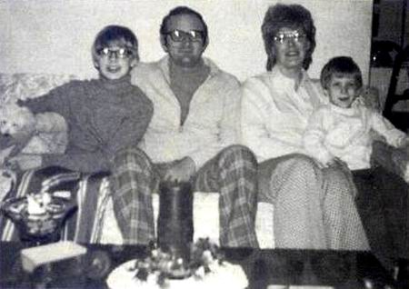

JEFFREY DAHMER
SU INFANCIA
- 
-
Cuando Dahmer entró en el primer curso, los estudios universitarios de Lionel le mantenían lejos de casa la mayor parte del tiempo; cuando estaba en casa, su mujer, hipocondríaca y con depresión, exigía atención constante y pasaba cada vez más tiempo en la cama. Además, se sabe que en una ocasión intentó suicidarse con meprobamato. En consecuencia, ninguno de los dos padres dedicaba mucho tiempo a su hijo, quien más tarde recordaría que, desde muy joven, se sentía «inseguro de la solidez de la familia», recordando la extrema tensión y las numerosas discusiones entre sus padres durante sus primeros años. Dahmer había sido un «niño enérgico y alegre», pero se volvió notablemente apagado después de una doble operación de hernia poco antes de su cuarto cumpleaños. En la escuela primaria, Dahmer era considerado tranquilo y tímido; una profesora recordó más tarde que detectó en Dahmer signos tempranos de abandono debido a la ausencia de su padre y a las enfermedades de su madre, cuyos síntomas aumentaron cuand3o esta se quedó embarazada de su segu..ndo hijo. Sin embargo, en la escuela primaria, Dahmer tenía un pequeño número de amigos. En octubre de 1966, la familia se mudó a Doylestown, Ohio. Cuando Joyce dio a luz en diciembre, Jeffrey pudo elegir el nombre de su hermano pequeño, por lo que le puso el de David. Ese mismo año, Lionel se licenció y empezó a trabajar como químico analítico en la cercana Akron.. Desde una edad temprana, Dahmer manifestó su interés por los animales muertos, fascinación que pudo haber comenzado cuando, a los cuatro años, vio a su padre sacar huesos de animales de debajo de la casa familiar. Según Lionel, a Dahmer le emocionaba el sonido que hacían los huesos, y empezó a preocuparse por estos. De vez en cuando buscaba más huesos debajo y alrededor de la casa de la familia, y exploraba los cuerpos de los animales vivos para descubrir dónde se encontraban sus huesos. En 1968, la familia se trasladó a un domicilio en el municipio de Bath, en el condado de Summit (Ohio), el tercero en dos años, y el sexto de los Dahmer desde que se casaron. La casa se encontraba en un terreno de un acre y medio de bosque, con una pequeña cabaña a poca distancia, donde Dahmer comenzó a coleccionar insectos grandes, como libélulas y polillas, y esqueletos de animales pequeños, como ardillas y tamias. Algunos de estos restos se conservaron en frascos de formaldehído y se guardaron en la cabaña.